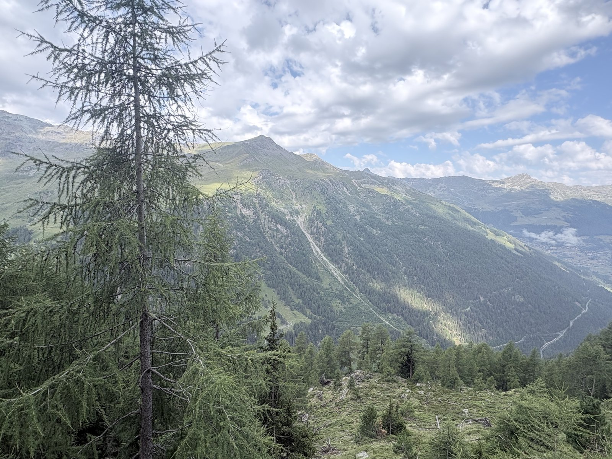
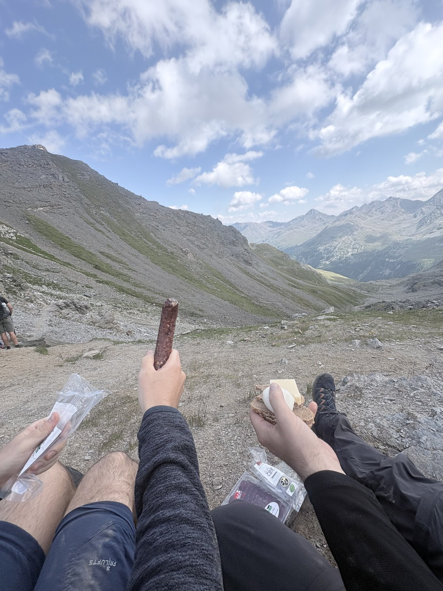
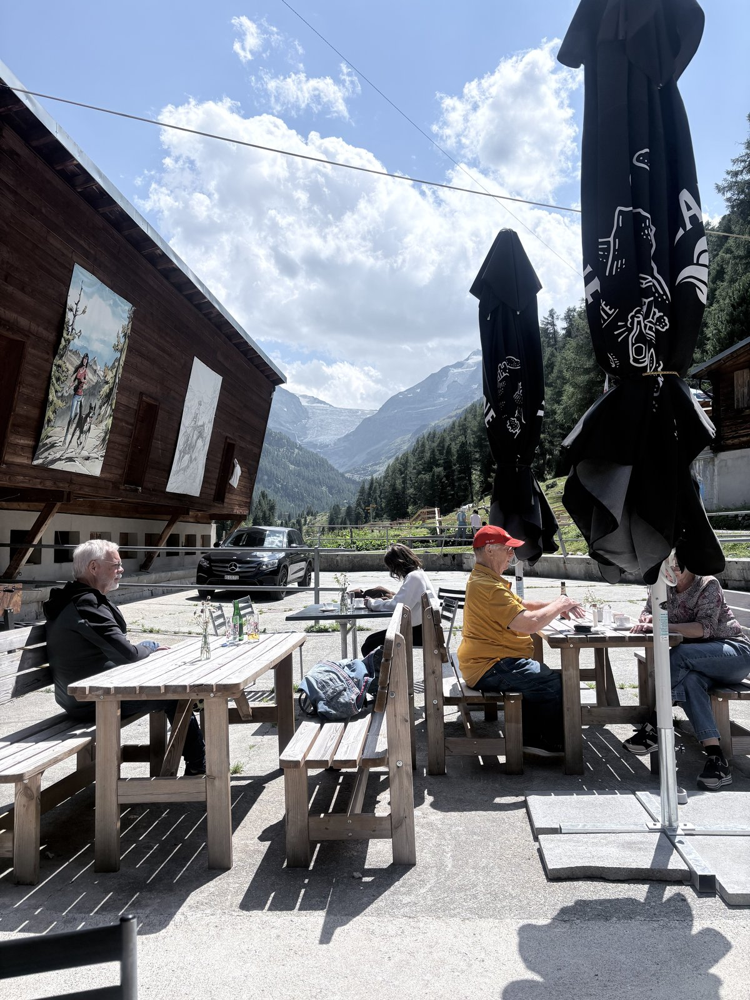
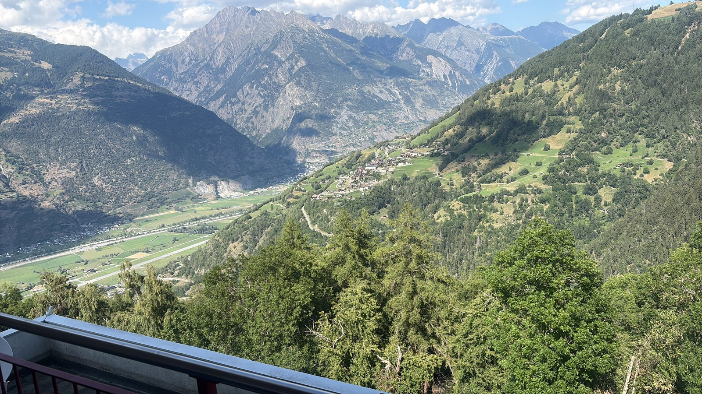
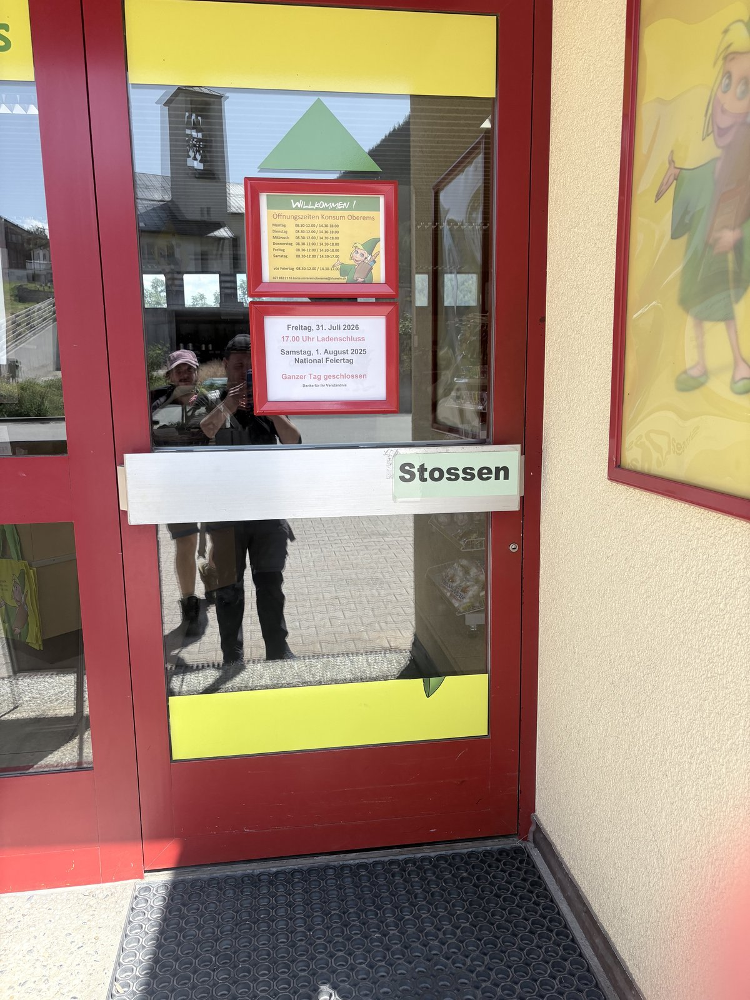

After the pure descent day into Zinal, today is a classic pass day again: from Zinal (1,675 m) up to the Forcletta (2,874 m) and down the other side to Gruben (1,829 m) in the Turtmanntal – the plan says 17.2 km, 7:05 h, 1,218 m of ascent, 1,055 m of descent. We followed the route exactly as planned. The Forcletta is the traditional link between the Val d’Anniviers and the Turtmanntal and is one of the standard stages of the Chamonix-to-Zermatt Haute Route.
Climbing out of Zinal: The trail first climbs steeply out of the Zinal basin through open larch forest, past the slopes above St-Jean, with recurring open views back into the Val d’Anniviers. Only gradually does the forest thin out, opening onto the bare high terrain of the pass.

Climbing through larch forest – the view back into the valley opens up further with every metre of height gained.
Forcletta (2,874 m): Above the treeline the terrain turns bare and wide open, ringed by rugged three-thousanders. The Forcletta itself is a broad, unspectacular saddle – but with a panorama in both directions: back into the Val d’Anniviers, ahead into the Turtmanntal. Exactly the right spot for a well-earned break at the top.

Refuelling at 2,874 m: Valais dried meat, cheese and bread – one of the simplest and best pass-top meals of the whole trek.
Arrival in Gruben: The descent from the Forcletta into the Turtmanntal is noticeably gentler than the climb out of Zinal. Gruben itself is a handful of houses around a single, long-established hotel – for generations the only place to stop for miles around, and a fixed point on the route between Zinal and the Augstbordpass. The terrace is properly busy in the afternoon: hikers and a few older guests over coffee and cake, the mountains of the Turtmanntal behind them.

Afternoon calm on the terrace in Gruben – after 1,218 m of ascent, a very welcome institution in the middle of the Turtmanntal.
On to Oberems: With no beds left in Gruben itself, we continue by vehicle after the break to Oberems, high above the Rhone valley between Turtmann and Leuk. From the accommodation the view drops far down onto the valley floor with its vineyards and orchards, the peaks of the Bernese Alps hazy in the distance beyond.

Evening view from Oberems down into the Rhone valley – a panorama you wouldn't necessarily expect from this stage of the route.
A curiosity along the way: The door of the village shop “Konsum Oberems” provides some amusement – in Switzerland “Stossen” is simply the normal instruction for pushing a door open, but to German ears it is unavoidably a little cheeky.

“Stossen” – a Swiss classic that German-speaking hikers love to trip over.